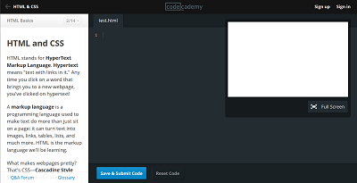
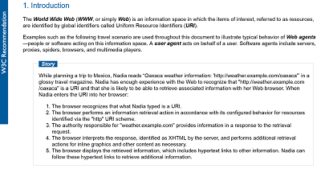

Web Group @ VIA
Meeting Schedule:
- (Super short) Introduction
- Premise
- Foundation
- Open Discussion
- Sample Presentation: Learning Resources
(Super short) Personal Introduction...
The Premise:
A place where students who are interested in the World Wide Web can meet and talk.
A lot like a user group (check it out on Wikipedia), but specifically for VIA students.
A starting point:
- Free and open
- Student-led
- Regular meetings
- Open discussions
- Potential for group activities
Open Discussion
- When/Where do we meet?
- How organized does the group need to be?
- Do we need an online group? Where do we have it?
- What's a good name for the group?
- Anything Else?
Sample Presentation
Resources for HTML/CSS/JS
All-purpose:
- Codecademy
- Codepen
- MDN Docs
- Shoptalk Show
- Web Platform Docs
- Standards at w3.org
- Warning: W3Schools
Codecademy
A free interactive training resource for web languages, including HTML, CSS, JavaScript (and jQuery), PHP, Ruby and Python. A highly recommended starting point, but also a good place to refresh if you need to look at the basics again.
Codepen

A free online code editor, where you can enter HTML, CSS and JS code and see the results immediately. Additionally, a thriving community where you can look at (and fork!) others' code as well as share your own.
Mozilla Developer Network
developer.mozilla.org/en-US/docs/Web

An extensive and community-built collection of documentation, ranging from A-Z references for HTML/CSS/JS, to in-depth guides and tutorials. Has resources for beginners (especially the tutorials) all the way up to professionals (especially the references).
Shoptalk
A weekly podcast hosted by Chris Coyier and Dave Rupert, two well-known and highly respected experts in web design and development. They often interview other influential web people, and answer listener-submitted questions in every show.
Web Platform Docs

Community-made reference guides to web languages and practices, officially organized and sanctioned by the W3C. Still new and under construction, so keep using the Mozilla docs for now.
Standards at the W3C
The official standards behind web languages and technologies. Contains all past, present and future (proposed) standards. Most of the documents are surprisingly readable, but this is primarily a resource for professionals and experts. Worth checking out if you really want/need to know how things work "under the hood"
Warning: W3Schools

Be warned: This site is maintained by unknown people, and the information it provides is often incorrect or poor practice. It is widely criticized in the web community (see for example w3fools.com). Do not mistake it for the W3C.
Bottom line: There are many terrific resources out there, created by well-known experts or by communities of professional developers. Avoid W3Schools, and if you do ever use it, take whatever you find there with a grain of salt.
Topic-specific:
- HTML & RWD
- CSS
- JavaScript
HTML & RWD:
- HTML5 Doctor (html5doctor.com) - Loads and loads of articles about HTML5.
- HTML5 Rocks (www.html5rocks.com/en/resources) - Huge collection of HTML-focused resources. Curated by Google.
- Web Ahead Podcast (5by5.tv/webahead) - Discussions on HTML, web design, web standards, etc.
People:
- Paul Irish - HTML5 proponent, works at Google
- Jeremy Keith - Author, HTML5 for Web Designers
- Ethan Marcotte - Designer, Author, popularized RWD
- Stephen Hay - Author, Responsive Design Workflow
CSS:
- CSS-Tricks (css-tricks.com) - An expansive and well-respected resource for CSS and other front-end languages.
People:
- Chris Coyier - CSS-Tricks, Shoptalk, Codepen, etc.
- Jonathan Snook - CSS methodologies (SMACCS)
- Lea Verou - CSS and web standards
JavaScript:
- Eloquent JavaScript - Free interactive online book
- "Crockford on JS lectures" (>=intermediate)
People:
- Brendan Eich - "The Perpetrator"
- Douglas Crockford - "The Good Parts"
- Addy Osmani - Omni-present engineer at Google
- Yehuda Katz - On Emberjs, jQuery, Rails, etc. teams